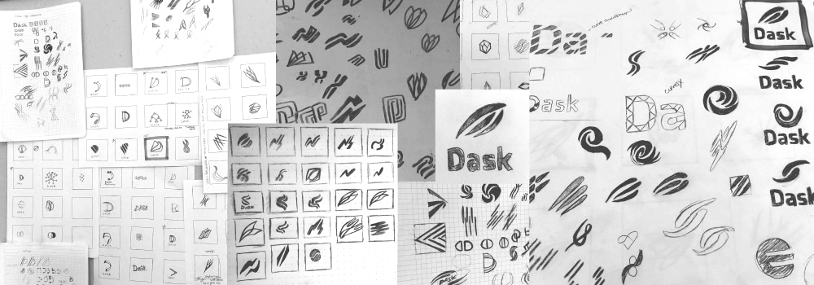
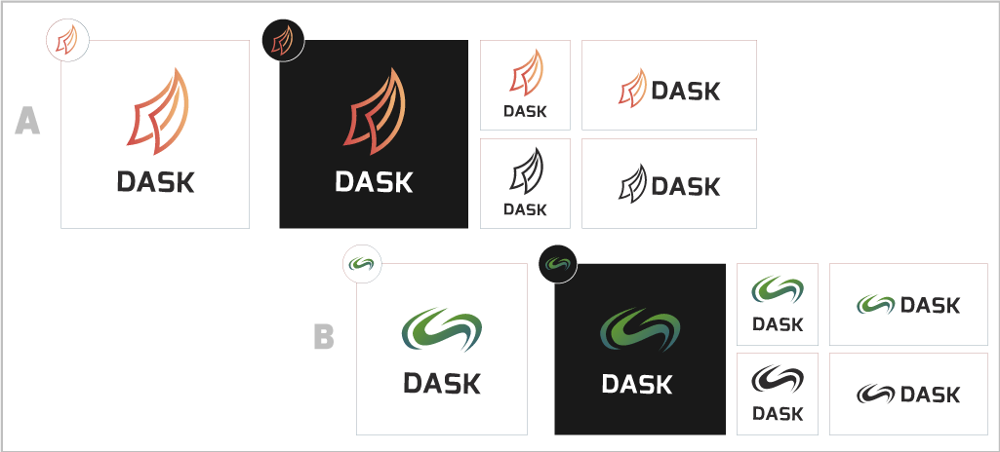
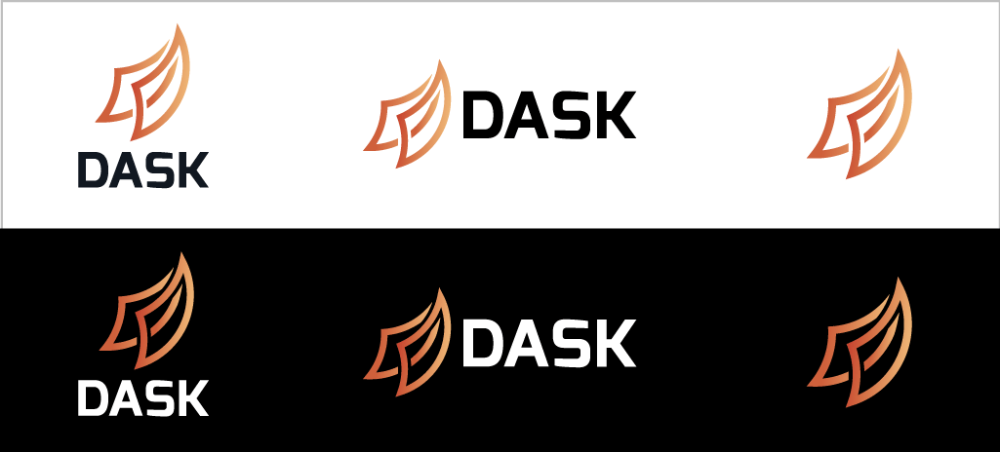

Dask
Dask is an fast & flexible open source parallel computing library for Python that is being incubated by Continuum Analytics.
Problem
Dask was growing in popularity but didn't have imagery for developers and fans to rally around.
Solution
I worked with the project leads to gather insights and guide them to a graphic solution. In the end we created a logo to help promote interest and market the new technology.
Research & Sketching
It started with an issue opened on Github. After meeting with the maintainers of Dask, researching the software and its capabilities, and collecting inspiration on Pinterest, I started to sketch iterations for a potential solutions.
Key words for brainstorming included: fast, flexible, & parallel. Being software, dask didn't have much visual imagery associated with it. A lot of abstractions based on metaphors of Dask's flexibility and swiftness were explored.
Digital Iteration
After going through sketches and critique with the project maintainers and peer designers, two directions were further explored and made into higher fidelity illustrations for review.
Refining
Once an iteration was chosen by the community and maintainers, the mark was further refined with feedback from peers and with scalability and clarity in mind.
The mark was based on the idea of 2 things starting to converge to completion and move forward. Sails, a comet, and parrallel planes served as imagery for inspiration.
Exo was chosen as the font since its bolder weight suggested power and it's unique 'S' is dynamic.
In Action
Dask 0.10.0 releasedhttps://t.co/tKwA3wUIJ9 pic.twitter.com/2x196048VS
— Matthew Rocklin (@mrocklin) June 13, 2016
The Dask logo made it's debut with the Dask 0.10.0 release. The Dask cheat sheet is also now available for download!